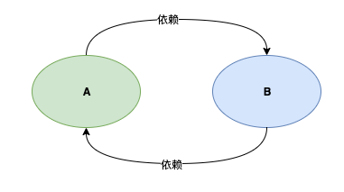
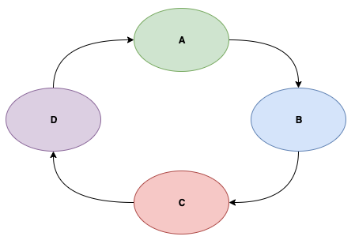
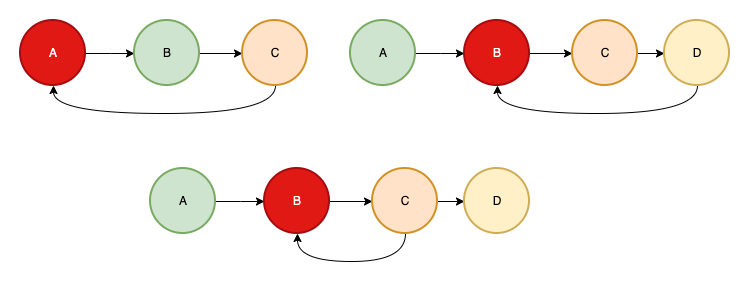
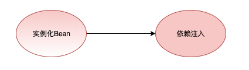
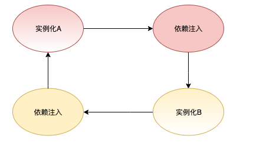
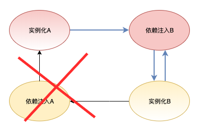
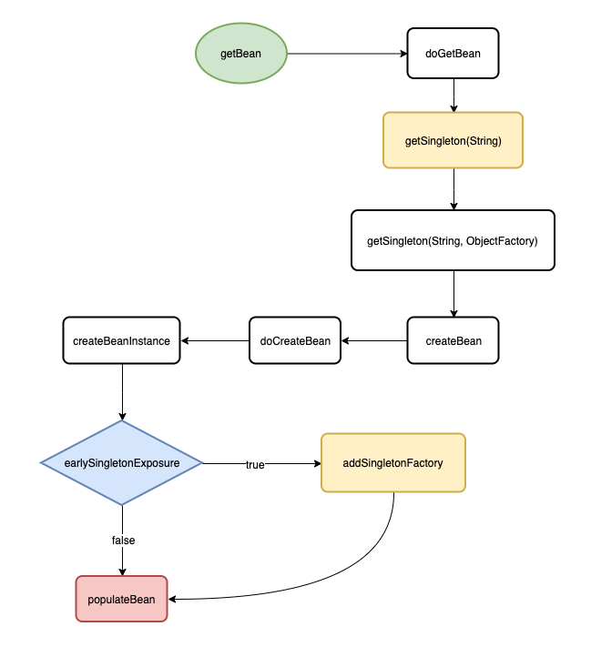
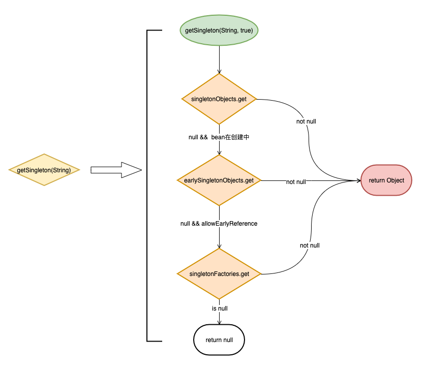
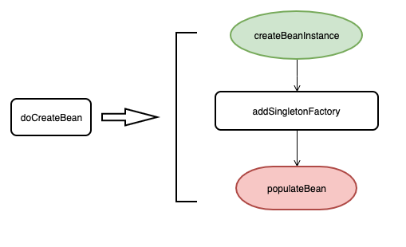
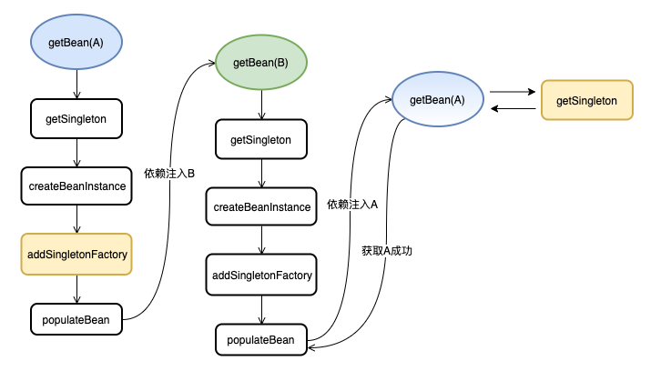

Spring的循环依赖
Aug 22, 2019 13:30 · 869 words · 5 minute read
Spring的循环依赖
前言
本文最耗时间的点就在于想一个好的标题， 既要灿烂夺目，又要光华内敛，事实证明这比砍需求还要难！
由于对象之间的依赖关系经常是错综复杂，使用不当会引发很多意想不到的问题， 一个很典型的问题就是循环依赖 （也可以称之为循环引用）。
Spring 为我们提供了依赖注入，并且在某些情景（单例 Bean 的注入）下支持循环依赖的注入
本文的主要目的是分析 Spring 在 Bean 的创建中是如何处理循环依赖的。
我会从循环依赖是什么，以及它的坏处，到最后通过Spring的源码来看它是如何处理这个问题的。
循环依赖不仅仅是 Spring 的 Bean 之间会产生， 往大了看，系统模块之间会产生循环依赖， 系统与系统之间也会产生循环依赖，这是一个典型的坏味道，我们应该尽量避免。
什么是循环依赖
循环依赖指的是多个对象之间的依赖关系形成一个闭环。
下图展示了两个对象 A 和 B 形成的一个循环依赖

下图展示了多个对象形成的一个循环依赖

现实中由于依赖层次深、关系复杂等因素， 导致循环依赖可能并不是那么一目了然。
为什么要避免循环依赖
循环依赖会为系统带来很多意想不到的问题，下面我们来简单讨论一下
一、循环依赖会产生多米诺骨牌效应
换句话说就是牵一发而动全身，想象一下平静的湖面落入一颗石子，涟漪会瞬间向周围扩散。
循环依赖形成了一个环状依赖关系， 这个环中的某一点产生不稳定变化，都会导致整个环产生不稳定变化
实际的体验就是
- 难以为代码编写测试，因为易变导致写的测试也不稳定
- 难以重构，因为互相依赖，你改动一个自然会影响其他依赖对象
- 难以维护，你根本不敢想象你的改动会造成什么样的后果
- ……
二、循环依赖会导致内存溢出
参考下面的代码
public class AService {
private BService bService = new BService();
}
public class BService {
private AService aService = new AService();
}
当你通过 new AService() 创建一个对象时你会获得一个栈溢出的错误。
如果你了解 Java 的初始化顺序就应该知道为什么会出现这样的问题。
因为调用 new AService() 时会先去执行属性 bService 的初始化, 而 bService 的初始化又会去执行 AService 的初始化， 这样就形成了一个循环调用，最终导致调用栈内存溢出。
Spring的循环依赖示例
下面我们通过简单的示例来展示 Spring 中的循环依赖注入， 我分别展示了一个构造器注入和 Field 注入的循环依赖示例
-
构造器注入
@Service public class AService { private final BService bService; @Autowired public AService(BService bService) { this.BService = bService } }@Service public class BService { private final AService aService; @Autowired public BService(AService aService) { this.aService = aService; } } -
Field注入
@Service public class AService { @Autowired private BService bService; }@Service public class BService { @Autowired private AService aService; }Setter注入和 Feild注入 类似
如果你启动 Spring 容器的话， 构造器注入的方式会抛出异常 BeanCreationException ， 提示你出现了循环依赖。
但是 Field 注入的方式就会正常启动，并注入成功。
这说明 Spring 虽然能够处理循环依赖，但前提条件时你得按照它能够处理的方式去做才行。
比如 prototype 的 Bean 也不能处理循环依赖的注入，这点我们需要注意。
一个检测循环依赖的方法
在我们具体分析 Spring 的 Field 注入是如何解决循环依赖时， 我们来看看如何到检测循环依赖。
在一个循环依赖的场景中，我们可以确定以下约束
- 依赖关系是一个图的结构
- 依赖是有向的
- 循环依赖说明依赖关系产生了环
明确后，我们就能知道检测循环依赖本质就是在检测一个图中是否出现了环， 这是一个很简单的算法问题。
利用一个 HashSet 依次记录这个依赖关系方向中出现的元素， 当出现重复元素时就说明产生了环， 而且这个重复元素就是环的起点。
参考下图， 红色的节点就代表是循环出现的点

以第一个图为例，依赖方向为 A->B->C->A ，很容易检测到 A 就是环状点。
Spring是如何处理循环依赖的
Spring 能够处理 单例Bean 的循环依赖（Field注入方式)，本节我们就通过纸上谈兵的方式来看看它是如何做到的。
首先，我们将 Spring 创建 Bean 的生命周期简化为两个步骤：实例化 -> 依赖注入， 如下图所示

实例化就相当于通过 new 创建了一个具体的对象， 而依赖注入就相当于为对象的属性进行赋值操作
我们再将这个过程扩展到两个相互依赖 Bean 的创建过程上去, 如下图所示

A 在执行依赖注入时需要实例化 B， 而 B 在执行依赖注入时又会实例化 A ，形成了一个很典型的依赖环。
产生环的节点就是 B 在执行依赖注入的阶段， 如果我们将其"砍”掉， 就没有环了， 如下图所示

这样做确实没有循环依赖了，但却带来了另一个问题，B 是没有经过依赖注入的， 也就是说 B 是不完整的， 这怎么办呢？
此时 A 已经创建完成并维护在 Spring 容器内，A 持有 B 的引用， 并且 Spring 维护着未进行依赖注入的 B 的引用。
当 Spring 主动创建 B 时可以直接取得 B 的引用 （省去了实例化的过程）， 当执行依赖注入时， 也可以直接从容器内取得 A 的引用， 这样 B 就创建完成了
A 持有的未进行依赖注入的 B，和后面单独创建 B 流程里面是同一个引用对象， 当 B 执行完依赖注入后，A 持有的 B 也就是一个完整的 Bean了。
Show me the code
没有代码的泛泛而谈是没有灵魂的
我画了一个简化的流程图来展示一个 Bean 的创建（省略了 Spring 的 BeanPostProcessor，Aware 等事件）过程， 希望你过一遍，然后我们再去看源码。
入口直接从 getBean(String) 方法开始， 以 populateBean 结束， 用于分析循环依赖的处理是足够的了

getBean(String) 是 AbstractBeanFactory 的方法, 它内部调用了 doGetBean 方法， 下面是源码：
public abstract class AbstractBeanFactory extends FactoryBeanRegistrySupport implements ConfigurableBeanFactory {
@Override
public Object getBean(String name) throws BeansException {
return doGetBean(name, null, null, false);
}
protected <T> T doGetBean(final String name, final Class<T> requiredType, final Object[] args, boolean typeCheckOnly){
...
// #1
Object sharedInstance = getSingleton(beanName);
...
final RootBeanDefinition mbd = getMergedLocalBeanDefinition(beanName);
if (mbd.isSingleton()) {
// #2
sharedInstance = getSingleton(beanName, new ObjectFactory<Object>() {
@Override
public Object getObject() throws BeansException {
// #3
return createBean(beanName, mbd, args);
}
});
}
...
return (T)bean;
}
}
我简化了 doGetBean 的方法体，与流程图对应起来，使得我们可以轻松找到下面的调用流程
doGetBean -> getSingleton(String) -> getSingleton(String, ObjectFactory)
getSingleton 是 DefaultSingletonBeanRegistry 的重载方法
DefaultSingletonBeanRegistry 维护了三个 Map 用于缓存不同状态的 Bean, 稍后我们分析 getSingleton 时会用到
/** 维护着所有创建完成的Bean */
private final Map<String, Object> singletonObjects = new ConcurrentHashMap<String, Object>(256);
/** 维护着创建中Bean的ObjectFactory */
private final Map<String, ObjectFactory<?>> singletonFactories = new HashMap<String, ObjectFactory<?>>(16);
/** 维护着所有半成品的Bean */
private final Map<String, Object> earlySingletonObjects = new HashMap<String, Object>(16);
getSingleton(String) 调用了重载方法 getSingleton(String, boolean)， 而该方法实际就是一个查询 Bean 的实现， 先看图再看代码：

从图中我们可以看见如下查询层次
singletonObjects => earlySingletonObjects => singletonFactories
再结合源码
public class DefaultSingletonBeanRegistry extends SimpleAliasRegistry implements SingletonBeanRegistry {
@Override
public Object getSingleton(String beanName) {
return getSingleton(beanName, true);
}
protected Object getSingleton(String beanName, boolean allowEarlyReference) {
// 从singletonObjects获取已创建的Bean
Object singletonObject = this.singletonObjects.get(beanName);
// 如果没有已创建的Bean， 但是该Bean正在创建中
if (singletonObject == null && isSingletonCurrentlyInCreation(beanName)) {
// 从earlySingletonObjects获取已经实例化的Bean
singletonObject = this.earlySingletonObjects.get(beanName);
// 如果没有实例化的Bean， 但是参数allowEarlyReference为true
if (singletonObject == null && allowEarlyReference) {
// 从singletonFactories获取ObjectFactory
ObjectFactory<?> singletonFactory = this.singletonFactories.get(beanName);
if (singletonFactory != null) {
// 使用ObjectFactory获取Bean实例
singletonObject = singletonFactory.getObject();
// 保存实例， 并清理ObjectFactory
this.earlySingletonObjects.put(beanName, singletonObject);
this.singletonFactories.remove(beanName);
}
}
}
return (singletonObject != NULL_OBJECT ? singletonObject : null);
}
}
通过 getSingleton(String) 没有找到Bean的话就会继续往下调用 getSingleton(String, ObjectFactory) , 这也是个重载方法， 源码如下
public Object getSingleton(String beanName, ObjectFactory<?> singletonFactory) {
...
// 获取缓存的Bean
Object singletonObject = this.singletonObjects.get(beanName);
if (singletonObject == null) {
...
// 标记Bean在创建中
beforeSingletonCreation(beanName);
boolean newSingleton = false;
...
// 创建新的Bean， 实际就是调用createBean方法
singletonObject = singletonFactory.getObject();
newSingleton = true;
...
if (newSingleton) {
// 缓存bean
addSingleton(beanName, singletonObject);
}
}
return (singletonObject != NULL_OBJECT ? singletonObject : null);
}
流程很清晰，就没必要再画图了，简单来说就是根据 beanName 找不到 Bean 的话就使用传入的 ObjectFactory 创建一个 Bean。
从最开始的代码片段我们可以知道这个 ObjectFactory 的 getObject 方法实际就是调用了 createBean 方法
sharedInstance = getSingleton(beanName, new ObjectFactory<Object>() {
@Override
public Object getObject() throws BeansException {
// #3
return createBean(beanName, mbd, args);
}
});
createBean 是 AbstractAutowireCapableBeanFactory 实现的，内部调用了 doCreateBean 方法
doCreateBean 承担了 bean 的实例化，依赖注入等职责。
参考下图

createBeanInstance 负责实例化一个 Bean 对象。
addSingletonFactory 会将单例对象的引用通过 ObjectFactory 保存下来， 然后将该 ObjectFactory 缓存在 Map 中（该方法在依赖注入之前执行）。
populateBean 主要是执行依赖注入。
下面是源码， 基本与上面的流程图保持一致， 细节的地方我也标了注释了
public abstract class AbstractAutowireCapableBeanFactory extends AbstractBeanFactory
implements AutowireCapableBeanFactory {
@Override
protected Object createBean(String beanName, RootBeanDefinition mbd, Object[] args) throws BeanCreationException {
...
return doCreateBean(beanName, mbdToUse, args);
}
protected Object doCreateBean(final String beanName, final RootBeanDefinition mbd, final Object[] args) {
...
BeanWrapper instanceWrapper = null;
if (instanceWrapper == null) {
// 实例化Bean
instanceWrapper = createBeanInstance(beanName, mbd, args);
}
final Object bean = (instanceWrapper != null ? instanceWrapper.getWrappedInstance() : null);
// 允许单例Bean的提前暴露
boolean earlySingletonExposure = (mbd.isSingleton() && this.allowCircularReferences && isSingletonCurrentlyInCreation(beanName));
if (earlySingletonExposure) {
// 新建并缓存ObjectFactory
addSingletonFactory(beanName, new ObjectFactory<Object>() {
@Override
public Object getObject() throws BeansException {
// 如果忽略BeanPostProcessor逻辑， 该方法实际就是直接返回bean对象
// 而这里的bean对象就是前面实例化的对象
return getEarlyBeanReference(beanName, mbd, bean);
}
});
}
...
// 依赖注入
populateBean(beanName, mbd, instanceWrapper);
...
}
}
如果你仔细看了上面的代码片段，相信你已经找到 Spring 处理循环依赖的关键点了
我们以 A，B 循环依赖注入为例，画了一个完整的注入流程图

注意上图的黄色节点， 我们再来过一下这个流程
- 在创建 A 的时候，会将 实例化的A 通过
addSingleFactory（黄色节点）方法缓存, 然后执行依赖注入B。 - 注入会走创建流程， 最后B又会执行依赖注入A。
- 由于第一步已经缓存了 A 的引用， 再次创建 A 时可以通过
getSingleton方法得到这个 A 的提前引用（拿到最开始缓存的 objectFactory， 通过它取得对象引用）， 这样 B 的依赖注入就完成了。 - B 创建完成后， 代表 A 的依赖注入也完成了，那么 A 也创建成功了 （实际上 Spring 还有 initial 等步骤，不过与我们这次的讨论主题相关性不大）
这样整个依赖注入的流程就完成了
总结
又到了总结的时候了，虽然全文铺的有点长，但是 Spring 处理单例 Bean 的循环依赖却并不复杂，而且稍微扩展一下，我们还可以将这样的处理思路借鉴一下从而处理类似的问题。
不可避免的文章还是留下了不少坑，比如
- 我没有详细解释构造器注入为什么不能处理循环依赖
- 我没有详细说明 Spring 如何检测循环依赖的细节
- 我也没有说明 prototype 的 Bean 为什么不能处理循环依赖
- …..
当然这些都能在 Spring 创建 Bean 的流程里面找到（getBean(String) 方法），细节的东西就留给读者自己去源码里面发现了哦